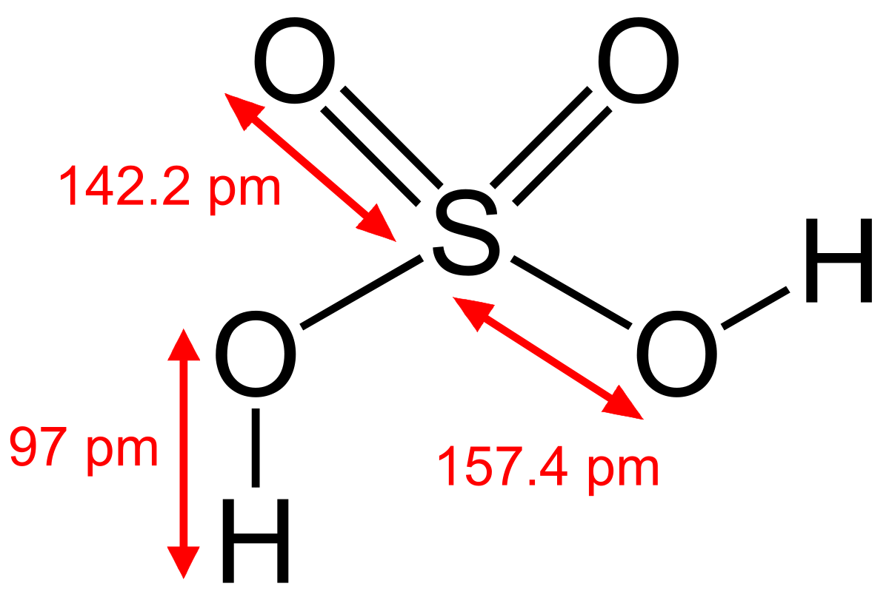

La química inorgánica se encarga del estudio integrado de la formación, composición, estructura y reacciones químicas de los elementos y compuestos inorgánicos (por ejemplo, ácido sulfúrico o carbonato de calcio); es decir, los que no poseen enlaces carbono-hidrógeno, porque estos pertenecen al campo de la química orgánica. Dicha separación no es siempre clara, como por ejemplo en la química organometálica que es una superposición de ambas.

Conceptos clave
Muchos compuestos inorgánicos son compuestos iónicos, que consisten en cationes y aniones unidos por enlaces iónicos. Ejemplos de sales (que son compuestos iónicos) son el cloruro de magnesio MgCl2, que consiste en magnesio (cationes Mg2+) y cloruro (aniones Cl -) o el óxido de sodio, Na2O, que consiste en cationes de sodio, Na+, y aniones de oxígeno, O 2−. En cualquier sal, las proporciones de los iones son tales que las cargas eléctricas se anulan, de modo que el compuesto es eléctricamente neutro. Los iones se describen por su estado de oxidación y su facilidad de formación se puede inferir a partir del potencial de ionización (para los cationes) o de la afinidad electrónica (para los aniones) de los elementos originales.
Clases importantes de compuestos inorgánicos son los óxidos, los carbonatos, los sulfatos y los haluros. Muchos compuestos inorgánicos se caracterizan por sus altos puntos de fusión. Las sales inorgánicas normalmente son malos conductores en estado sólido. Otra característica importante es su facilidad de cristalización. Mientras algunas sales (por ejemplo, el NaCl ) son muy solubles en agua, otras (por ejemplo, el AgCl) no lo son.
La reacción inorgánica más simple es el doble desplazamiento cuando, al mezclar dos sales, los iones se intercambian sin cambiar el estado de oxidación. En las reacciones rédox, sin embargo, un reactivo, el oxidante, disminuye su estado de oxidación y otro reactivo, el reductor, ve su estado de oxidación aumentado. El resultado neto es un intercambio de electrones. El intercambio de electrones también puede ocurrir indirectamente, por ejemplo, en las baterías, un concepto clave en la electroquímica .
Cuando un reactivo contiene átomos de hidrógeno, puede producirse una reacción al intercambiar protones en la química ácido-base . En una definición más general, cualquier especie química capaz de unirse a pares de electrones se llama un ácido de Lewis; a la inversa, cualquier molécula que tiende a donar un par de electrones se denomina base de Lewis. Como refinamiento de las interacciones ácido-base, la teoría ABDB toma en cuenta también la polarizabilidad y el tamaño de los iones.
Los compuestos inorgánicos se encuentran en la naturaleza como minerales. Por ejemplo, el suelo puede contener sulfuro de hierro como pirita o sulfato de calcio como yeso. Los compuestos inorgánicos también se encuentran con diversas funciones como biomoléculas: como electrolitos (cloruro de sodio), en el almacenamiento de energía (ATP) o en la construcción (el esqueleto de polifosfato en el ADN ).
El primer compuesto inorgánico importante hecho por el hombre fue el nitrato de amonio para la fertilización del suelo a través del proceso de Haber. Algunos compuestos inorgánicos se sintetizan para su uso como catalizadores como el óxido de vanadio (V) y el cloruro de titanio (III), o como reactivos en química orgánica, como el hidruro de litio y aluminio .
Las subdivisiones de la química inorgánica son la química organometálica, la química de clústers y la química bioinorgánica. Estos campos son áreas activas de investigación en química inorgánica, dirigidas hacia nuevos catalizadores, superconductores y terapias .
Química inorgánica industrial
La química inorgánica es un área altamente práctica de la ciencia. Tradicionalmente, la escala de la economía de una nación podía evaluarse por su producción de ácido sulfúrico. Los 20 productos químicos inorgánicos principales fabricados en Canadá, China, Europa, India, Japón y los Estados Unidos (datos de 2005) son:5 sulfato de aluminio, amoniaco, nitrato de amonio, sulfato de amonio , negro de carbón, cloro, ácido clorhídrico, hidrógeno, peróxido de hidrógeno, ácido nítrico, nitrógeno, oxígeno, ácido fosfórico, carbonato de sodio, clorato de sodio, hidróxido de sodio, silicato de sodio, sulfato de sodio, ácido sulfúrico y dióxido de titanio.
La fabricación de fertilizantes es otra aplicación práctica de la química industrial inorgánica.